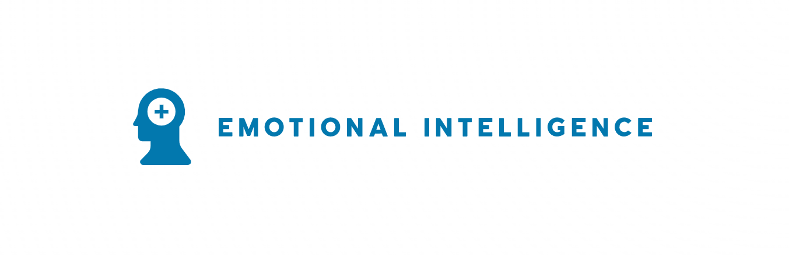

What is Emotional Intelligence?
Emotional intelligence is the ability to be present in the moment and mindful! It is the ability to understand, manage and use your own emotions positively.
How is EQ different to IQ?
IQ is way to measure your ability to problem solve and use logic and to understanding complex Ideas. Whereas EQ measures your ability to recognize emotion in yourself and others, using that awareness to guid your decisions.
Why is EQ important?
EQ is important and can have many benefits such as:
- • Improving communication.
- • To build better relationships.
- • Reduce stress within your self and teams you are working in.
- • Defuse conflict.
- • Improve job satisfaction.
- • Promote happiness from within.
I think we can all agree the benefits of improving ones EQ can have positive effects, leading to a happier, healthier approach to living and working alongside others and to guide us to better decision making.